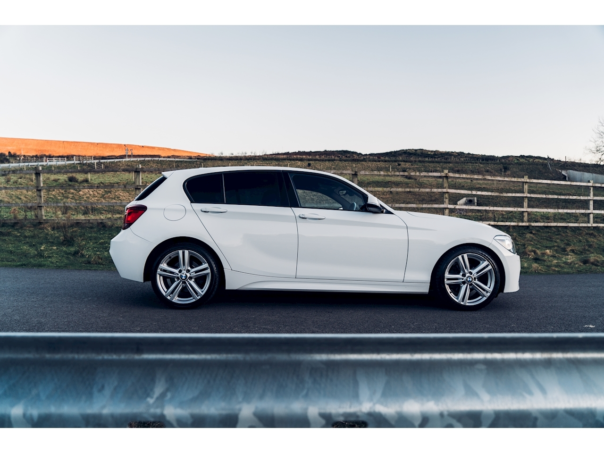
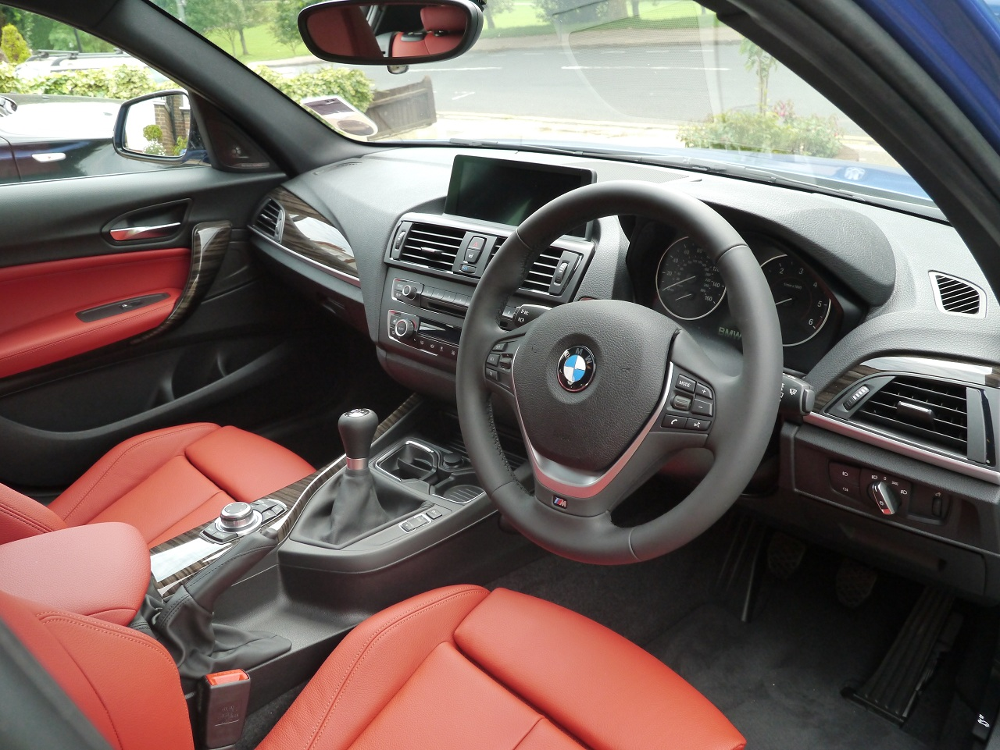
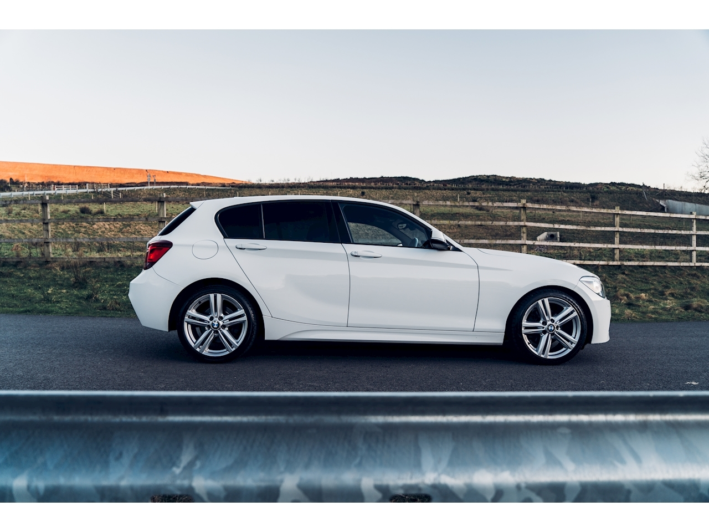
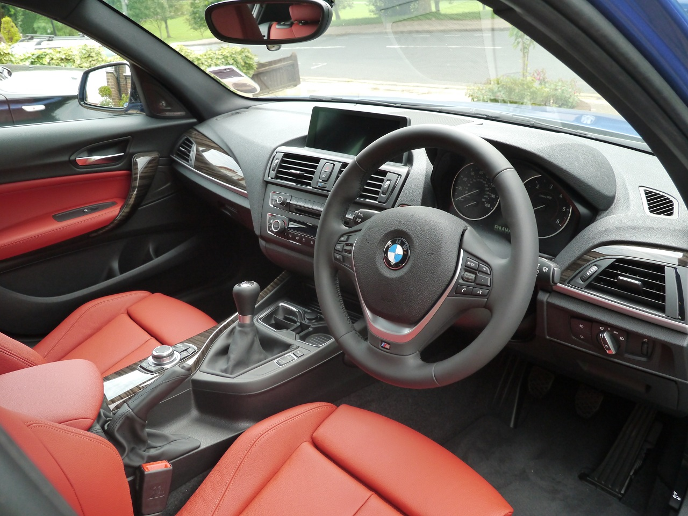

BMW F20
The second-generation 1 Series hatchback (2011 - 2019)
 



Car Specifications
- Engine Options: 1.5L Inline-3, 2.0L Inline-4, 2.0L Diesel, 3.0L Inline-6
- Power: 109 - 340 hp
- Torque: 180 - 450 Nm
- Transmission: 6-speed manual, 8-speed automatic
- Top Speed: 250 km/h (155 mph)
- 0-60 mph: 4.6 seconds (M140i)
- Fuel Economy: 4.0 - 7.1 L/100 km (57 - 33 mpg)
- Production Years: 2011 - 2019
- Body Style: 3-door and 5-door hatchback
- Drive Type: Rear-Wheel Drive (AWD on select models)
- Weight: 1,320 - 1,520 kg
About the BMW F20
The BMW F20 is the second generation of the 1 Series, building upon the foundation of its predecessor while introducing more modern features and improved efficiency. The F20 is well-known for maintaining the rear-wheel-drive layout, a rarity in the compact car segment, and for offering a wide range of powerful and efficient engines.
With its stylish design, advanced technology, and engaging driving dynamics, the F20 solidified its position as a leader in the premium hatchback market. The sport-oriented trims, particularly the M135i and M140i, were particularly celebrated by driving enthusiasts for their exceptional performance.
Image Gallery


Key Features
- Engaging Performance: A range of potent engines and the hallmark rear-wheel-drive layout ensure an exhilarating drive.
- Modern Technology: Features like the iDrive infotainment system, navigation, and advanced driver-assistance systems.
- Versatility: Available in both 3-door and 5-door configurations, catering to different needs.
- Safety: High safety ratings with advanced features like adaptive cruise control, parking sensors, and lane departure warnings.
- Luxurious Interior: Premium materials, ergonomic design, and ample customization options for a refined cabin experience.
Technical Information
The BMW F20 offers a range of engine configurations to suit different driving needs. Below are some of the engine options and their respective specifications:
Engine Codes and Iterations
- B38: 1.5L Inline-3, 109 hp, used in 114i
- B48: 2.0L Inline-4, 184 hp, used in 120i
- B47: 2.0L Diesel Inline-4, 190 hp, used in 120d
- N55: 3.0L Inline-6, 326 hp, used in M140i
- N13: 1.6L Inline-4, 136 hp, used in 116i
Conclusion
The BMW F20 combines practicality, modern technology, and thrilling performance, making it a top choice for those who value both style and substance in a compact car. Whether you're commuting or enjoying spirited driving, the F20 delivers an exceptional experience.